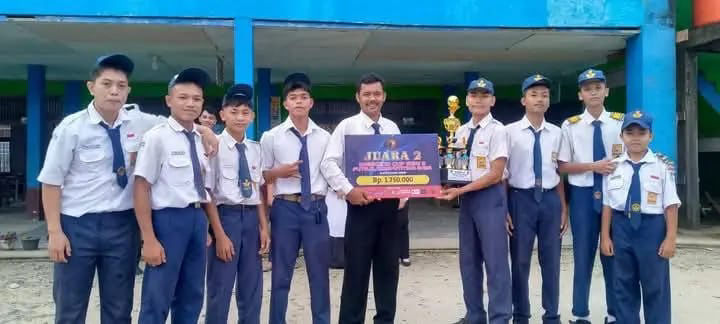

JUARA FUTSAL REGU PUTRA

Tim Futsal Putra SMP Borneo Bengkayang berhasil meraih Juara 2 dalam turnamen futsal antar sekolah. Prestasi ini menunjukkan dedikasi, kerja sama tim, dan semangat juang siswa-siswa kami dalam bidang olahraga. Selamat untuk tim futsal dan terima kasih kepada guru pembimbing atas dukungannya!